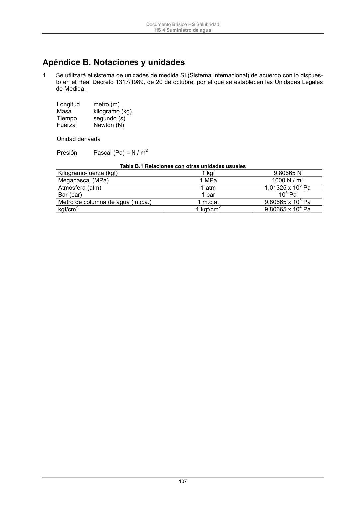

DB-HS Salubridad · edición 2022-06-14 · capa oficial
Documento DB-HS-oficial · SHA-256 del PDF 68df3caacc95f71aee2ec1ba7b2c65ae66155c21e3a8785521b8fdd4fd640d3b
Copia fiel del PDF fuente · Fuente oficial
Ficha de la disposición en la fuente oficial
Formatos: JSON del segmento · Markdown
Apéndice B. Notaciones y unidades 1 Se utilizará el sistema de unidades de medida SI (Sistema Internacional) de acuerdo con lo dispues- to en el Real Decreto 1317/1989, de 20 de octubre, por el que se establecen las Unidades Legales de Medida. Longitud metro (m) Masa kilogramo (kg) Tiempo segundo (s) Fuerza Newton (N) Unidad derivada Presión Pascal (Pa) = N / m2 Tabla B.1 Relaciones con otras unidades usuales Kilogramo-fuerza (kgf) 1 kgf 9,80665 N Megapascal (MPa) 1 MPa 1000 N / m2 Atmósfera (atm) 1 atm 1,01325 x 105 Pa Bar (bar) 1 bar 105 Pa Metro de columna de agua (m.c.a.) 1 m.c.a. 9,80665 x 103 Pa kgf/cm2 1 kgf/cm2 9,80665 x 104 Pa Documento Básico HS Salubridad HS 4 Suministro de agua 108
